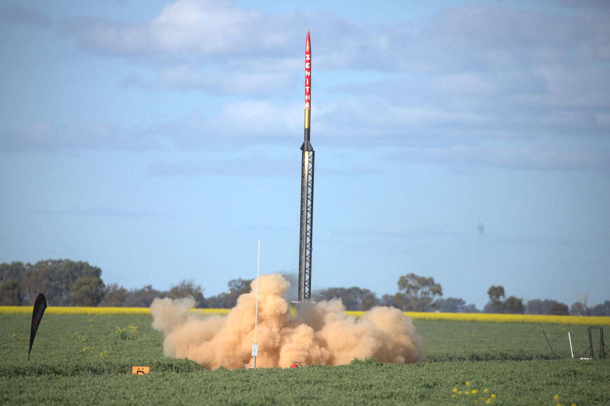
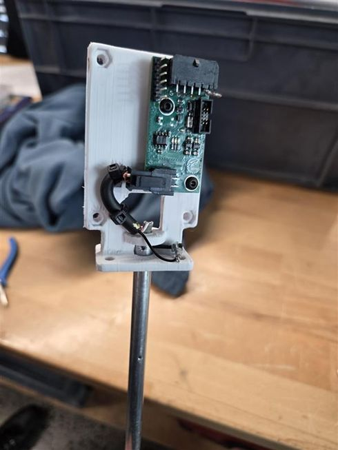
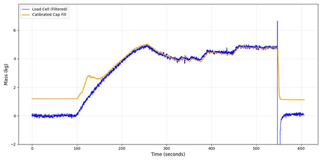

Solaris Mk II Hybrid Engine & Ground Station
4 kN N₂O/paraffin hybrid rocket engine with custom ground station electronics, capacitive sensor, and distributed control system
Project Overview
The Solaris Mk II was our team's most ambitious electrical and software project, developing a complete ground station control system for a 4 kN thrust N₂O/paraffin hybrid rocket engine. Flown on Project Zenith at IREC 2025 (successful launch to 5,000 ft; previous flights in Australia reached 12,000 ft), this system enabled real-time control and monitoring of our propulsion systems.
Our work contributed to Monash HPR winning the Jim Furfaro Award for Technical Excellence out of 140+ international teams and placing 2nd in category.
Role & Ownership (Avionics Vice Lead – Propulsion Controls)
I represented the avionics team in technical meetings and owned propulsion control integration and test readiness. Before tests, I verified "ready to run" after continuity/harness checks, sensor sanity checks, comms health checks (CAN/RS-422/MQTT), and state-machine dry runs (fill/ignite/abort).

Ground Station Electronics
I designed and built three successive hardware iterations for fueling, ignition, and data logging. Each iteration refined based on test results and operational lessons, culminating in a system capable of 100 kHz data acquisition.
Design Evolution

Iteration 1 - Initial prototype
Iteration 2 - Refined layout
Iteration 3 - Final production system
Electrical Cabinet Design
Component Integration
Designed and constructed complete electrical cabinet with DIN rail mounted components: power supplies, networking hardware, Raspberry Pi, LabJack DAQ, motor drivers, and relays.
Custom Cabling
Fabricated custom cable assemblies and connectors for actuators, sensors, and communication lines. All connections designed for reliability under vibration and condensation conditions.
Industrial Standards
Applied structured electrical design principles learned from Bosch, ensuring professional-grade assembly and maintenance accessibility.
Control Architecture
Developed distributed control system integrating LabJack DAQs, STM32 microcontrollers, and Raspberry Pi. Communication protocols included RS422, CAN, and MQTT for automated fill, ignition, and abort sequences with real-time monitoring.
Capacitive Propellant Sensor
Led a team of four to design, manufacture, and test a novel capacitive N₂O propellant level sensor. Through careful calibration and shielding, we achieved repeatable measurements with accuracy within ±10 g, significantly improving safety and precision in propellant tank monitoring.

Manufactured sensor assembly

Calibration curve showing ±10g accuracy
Design & Development
Research & Requirements
Led complete sensor development from concept through production, defining requirements for cryogenic N₂O measurement.
CAD Design
Designed custom sensing probe element using SolidWorks and Creo, optimizing geometry for signal strength and mechanical integration.
Firmware Development
Developed STM32 firmware for capacitance measurement and signal processing, implementing noise filtering algorithms.
Calibration
Created comprehensive calibration methodology with regression-based scripts, achieving ±10g accuracy through iterative testing.
Technical Challenges
Resolved electrical noise issues through strategic shielding design, performed iterative probe design tweaks to improve signal stability, and developed comprehensive calibration procedures for reliable measurements.
Software and Communication Stack
I designed and presented the complete software and communication architecture connecting the rocket, engine, and ground station. The system monitored and controlled over 20 signals across the entire propulsion system.
Simplified system architecture
Main control page in Ignition SCADA
System Architecture
Backend Control
Multithreaded Python backend with state machine logic for fill, ignition, and abort procedures. Handles real-time decision making and safety interlocks.
Operator Interface
Ignition SCADA interface providing real-time monitoring, telemetry visualization, and manual override capabilities for operators.
Data Logging
MQTT-connected database for long-term data logging, with high-rate telemetry recorded locally for detailed post-test analysis.
IREC 2025 Competition Experience
Competition Day
Technical Presentation
Co-presented control and telemetry architecture at podium session. Our presentation directly contributed to winning the Jim Furfaro Award for Technical Excellence.
Pre-Launch Crisis
Propellant sensor failed the night before launch. Stayed up debugging with propulsion lead, identified electrical noise issue, implemented shielding fix. System performed flawlessly the next morning—cleared for launch.
Launch Operations
Executed launch pad setup, engine integration, and final pre-launch checks under time pressure. System operated nominally through ignition and flight to 12,000 ft apogee.
Safety & Reliability
Implemented comprehensive safety interlocks and fault-tolerant design throughout the system. Redundant control systems protected high-consequence operations, and the entire system was designed for safe operation in a safety-critical test environment.